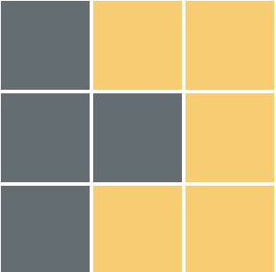
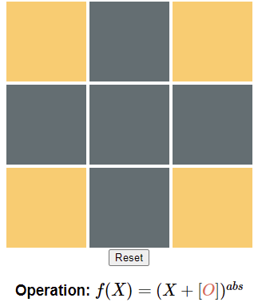
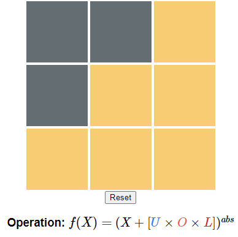

\(O\) \(=\begin{bmatrix} 0 & -1 & 0\\ -1 & -1 & -1\\ 0 & -1 & 0 \end{bmatrix}\)
\(U\) \(=\begin{bmatrix} 0 & 1 & 0\\ 0 & 0 & 1\\ 0 & 0 & 0 \end{bmatrix}\)
\(L\) \(=\begin{bmatrix} 0 & 0 & 0\\ 1 & 0 & 0\\ 0 & 1 & 0 \end{bmatrix}\)
My project was about recreating the "Lights Out" Puzzle in a way
that could be represented extremely easily through mathematics.
There are only a few main components of \(f(X)\)
\(O\) represents the matrix responsible for the basic operation that
is done when you click on one of the squares. In this puzzle, clicking on
a square will result in that one changing its state (on->off, off->on) and
also changing the adjacent squares' states. There are only two states in
this puzzle: on and off. Numerically, these two states can be represented
numerically as 0 (to represent the off state)
and 1 (to represent the on state).
\(O=\begin{bmatrix}
0 & -1 & 0\\
-1 & -1 & -1\\
0 & -1 & 0
\end{bmatrix}\)
If \(X_{2,2}\) was the square you clicked on, then adding \(O\) to
\(X\) would properly do that operation. For example,
\[O+X=\begin{bmatrix}
0 & -1 & 0\\
-1 & -1 & -1\\
0 & -1 & 0
\end{bmatrix}+\begin{bmatrix}
0 & 0 & 1\\
1 & 1 & 0\\
0 & 0 & 1
\end{bmatrix}=\begin{bmatrix}
0 & -1 & 1\\
0 & 0 & -1\\
0 & -1 & 1
\end{bmatrix}\]
And now take the absolute value
\[\begin{bmatrix}
0 & -1 & 1\\
0 & 0 & -1\\
0 & -1 & 1
\end{bmatrix}^{abs}=\begin{bmatrix}
0 & 1 & 1\\
0 & 0 & 1\\
0 & 1 & 1
\end{bmatrix}\]
\(\longrightarrow\)
\(O\) Before
\(O\) After
